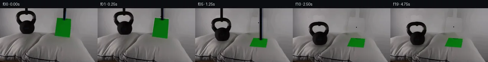

![首帧]()

Round 00
2026-11-05T20:21:06.158416+00:00像素候选变化代码 +295/−0inspection 更新
pixels 92a484ad7c651b8e · code 32f7e56f7f18e0bf
查看本轮 generate.py 真实 diff
--- previous/generate.py
+++ current/generate.py
@@ -0,0 +1,295 @@
+"""PixelWorld continuation using only the supplied image and local pixel math."""
+from pathlib import Path
+import json
+import numpy as np
+import cv2
+from scipy import ndimage as ndi
+from PIL import Image, ImageDraw
+from artifact_io import save
+
+ROOT = Path(__file__).resolve().parent
+SOURCE = np.array(Image.open(ROOT / 'first_frame.png').convert('RGB'))
+H, W = SOURCE.shape[:2]
+Y, X = np.mgrid[:H, :W].astype(np.float32)
+SRC = SOURCE.astype(np.float32)
+L = SRC.mean(axis=2)
+
+
+def smooth(x):
+ x = np.clip(x, 0, 1)
+ return x*x*(3-2*x)
+
+
+def row_fill(image, x0, x1):
+ """Estimate the unobstructed wall/fabric from same-row local boundary RGBs."""
+ out = image.copy()
+ left = np.median(image[:, x0-3:x0], axis=1)
+ right = np.median(image[:, x1+1:x1+4], axis=1)
+ mix = np.linspace(0, 1, x1-x0+1)[None, :, None]
+ out[:, x0:x1+1] = left[:, None]*(1-mix) + right[:, None]*mix
+ return out
+
+
+# Dark silhouette, including its soft camera edge and open handle hole.
+bell_core = (L < 80) & (X >= 41) & (X <= 94) & (Y >= 6) & (Y <= 68)
+for yy, lo, hi in [(66, 58, 83), (67, 59, 82), (68, 61, 80)]:
+ bell_core[yy] &= (X[yy] >= lo) & (X[yy] <= hi)
+bell_region = ndi.binary_dilation(bell_core, iterations=1)
+bell_region &= (X >= 40) & (X <= 96) & (Y >= 6) & (Y <= 68)
+for yy, lo, hi in [(66, 57, 84), (67, 58, 83), (68, 60, 81)]:
+ bell_region[yy] &= (X[yy] >= lo) & (X[yy] <= hi)
+
+wall_bell = row_fill(SRC, 40, 97)
+bell_background_luma = wall_bell.mean(2)
+bell_alpha = np.clip((bell_background_luma-L)/(bell_background_luma-15), 0, 1)
+bell_alpha *= bell_region
+# Dark interior values are the actual photographed metal, not a uniform fill.
+bell_alpha[bell_core & (L < 55)] = 1
+bell_rgb = np.divide(SRC-wall_bell*(1-bell_alpha[..., None]),
+ np.maximum(bell_alpha[..., None], .001))
+bell_rgb = np.clip(bell_rgb, 0, 255)
+bell_premul = bell_rgb * bell_alpha[..., None]
+
+# Remove the original object positions and the narrow pre-existing holders.
+green_excess = SRC[..., 1]-np.maximum(SRC[..., 0], SRC[..., 2])
+paper_region = (green_excess > 7) & (X > 140) & (X < 190) & (Y >= 24) & (Y < 85)
+paper_region = ndi.binary_dilation(paper_region, iterations=1)
+left_holder = (X >= 64) & (X <= 75) & (Y < 18) & (L < 135)
+right_holder = (X >= 163) & (X <= 176) & (Y <= 34) & ((L < 105) | (SRC[..., 2]-SRC[..., 0] > 8))
+removal = bell_region | paper_region | left_holder | right_holder
+removal = ndi.binary_dilation(removal, iterations=1)
+clean = cv2.inpaint(SOURCE, removal.astype(np.uint8)*255, 5, cv2.INPAINT_TELEA).astype(np.float32)
+# Large wall holes are nearly textureless. Use horizontal reconstruction there,
+# while inpainting follows the source fabric structure near the pillow edge.
+wall_paper = row_fill(SRC, 139, 194)
+wall_weight = 1-smooth((Y-59)/9)
+for area, estimate in [(removal & (X < 110), wall_bell),
+ (removal & (X > 130), wall_paper)]:
+ w = area.astype(np.float32)*wall_weight
+ clean = clean*(1-w[..., None]) + estimate*w[..., None]
+
+# Extract the photographed sheet in normalized material coordinates.
+PS = 4
+TW, TH = 160, 208
+PAPER_SOURCE_CORNERS = np.array([[150,25.5], [186.5,29.5],
+ [182.5,78.5], [143,72.5]], np.float32)
+UV_CORNERS = np.array([[0,0], [TW-1,0], [TW-1,TH-1], [0,TH-1]], np.float32)
+uv_map = cv2.getPerspectiveTransform(PAPER_SOURCE_CORNERS, UV_CORNERS)
+paper_tex = cv2.warpPerspective(SOURCE, uv_map, (TW, TH), flags=cv2.INTER_CUBIC).astype(np.float32)
+# Reveal green material originally occluded by the top clamp. Samples come only
+# from the sheet's own adjacent material; its broader gradient is preserved.
+bad = (paper_tex[...,1] < 70) | (paper_tex[...,1]-paper_tex[...,2] < 25)
+bad &= np.indices((TH,TW))[0] < 45
+good_tex = paper_tex.astype(np.uint8)
+good_tex = cv2.inpaint(good_tex, bad.astype(np.uint8)*255, 7, cv2.INPAINT_TELEA)
+paper_tex[bad] = good_tex[bad]
+# A one-source-pixel inset prevents background-colored borders from traveling
+# with the thin sheet. Extend the nearest intact material at its boundaries.
… diff truncated; 208 more lines …